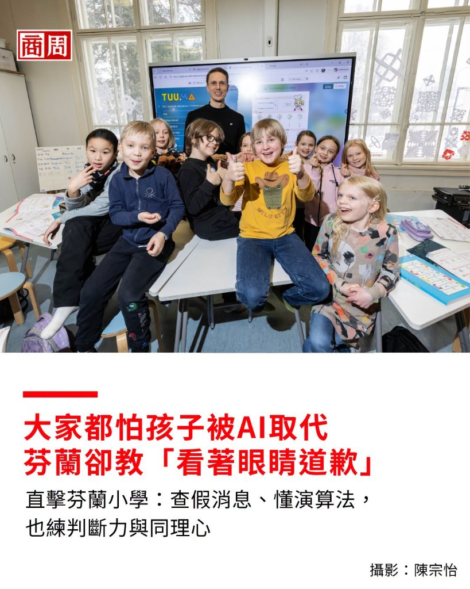

主講人：後庄國小 黃朝榮老師（菩提老師）
115年10月3日（六）09:30 - 10:30
（按空白鍵或向右鍵進入簡報）
繼暑假 AI 夏令營後，今天再次回到惠農。能與各位爸爸媽媽相聚一堂，是非常殊勝的因緣！
今天完全不講枯燥理論！等一下的即時手機投票與互動，懇請大家拿起手機熱烈配合！
60 分鐘我們一起輕鬆聊客廳、聊孩子，保證讓每位家長帶走最實用的 AI 伴學定心丸！
📌 教育部正式啟動「AI人才方舟計畫」（預算 117.55 億元 / 2026~2029年）
從「生生用平板」推進到「生生學 AI」，培養中小學生在安全規範下與 AI 協作思考的能力。
AI 已經逐步進入孩子的生活與學習。我們今天不是來全面禁止，而是「陪孩子學會用對方法」！
奶奶買點心哄孫子交出手機少玩遊戲，結果男孩當街情緒失控對長輩拳腳相加
手機遊戲與短影音的即時回饋，容易讓自制力仍在發育的孩子產生依賴與情緒反彈。
79.1% 教師觀察到學生依賴 AI 抄答案，但僅 13.5% 學生自覺有依賴，存在顯著認知落差！
近三成孩子不只查功課，還在跟 AI 說心事、說不敢告訴爸媽的話！
孩子對新工具的摸索與好奇心，往往走在大人的直覺前面！
大約七、八年前，我當科任老師走進一年級教室，全班都在喊「炭治郎」、「禰豆子」……
我當時根本沒聽過！孩子吸收新科技、新資訊的速度，遠超過大人的想像。
問一年級小朋友：「爸爸媽媽下班回家都在做什麼？」
連點五、六個小朋友，答案全部神同步：
「我爸爸在看手機、媽媽也一直看手機……」
孩子在學校看著老師專注教學，回到家孩子其實也是「看著大人的背影在學習」。
我們希望孩子主動拿起書本、動腦思考，客廳就需要我們先放下手機，成為孩子最好的專注榜樣！
有家長很興奮地問我：「黃老師，有沒有那種手機一拍、答案全自動寫好的 AI 家教？這樣小孩功課寫超快、字跡漂亮，家長也不用指導傷腦筋，多省事啊！」
老師在學校一步一腳印引導孩子思考、理解觀念、反覆練習，好不容易幫孩子把學習基礎一點一滴建立起來。
回家寫作業，如果孩子「秒拍照問 AI 抄答案」交差，白天在學校鍛鍊的思考迴路，晚上全被 AI 偷走了！
（CEPR 針對 2.6 萬名中學生長期追蹤：作業表現與實體閉卷測驗的落差）
作業正確率提高
有 AI 幫忙時作業全對
作業時間縮短
省下大把時間好輕鬆
實體閉卷考試退步
關掉 AI 後無法獨立解題
💡 核心警訊：「作業完成了，不代表學會了。」若大腦過度外包，實體考場就無法獨立思考！
曾經有個學生從小習慣參考網路範文，平時作業篇篇高分。五年級代表學校參加作文比賽……
坐在考場裡，面對一張空白稿紙，他整整坐了兩小時，一個字都寫不出來！
問法：「這題數學怎麼算？直接把答案寫給我。」
💥 結果：AI 秒吐出算式與答案，孩子複製貼上交差，考場上一題都不會！
黃金咒語：「我是三年級學生，我先想到的是＿＿。請每次只給我一個提示；如果我算錯請指出卡在哪一步。最後出一題類似題讓我關掉手機自己做！」
🌟 結果：AI 耐心引導想通，無 AI 獨立解題達成真學會！
「我一開始卡在＿＿，我問了 AI 兩次提示，才發現我原本算錯了……」
「所以我現在真正搞懂了＿＿的觀念，其實道理就是＿＿！」
🌟 爸媽不用會解題！只要坐在沙發上當聽眾，「聽孩子說一遍，比重複刷題更能把觀念真正弄懂！」
💖 樹洞接話錦囊：孩子跟 AI 說心事被你發現時，溫柔接話：「謝謝你願意告訴我，你希望我先聽，還是我們一起想辦法？」
全家約定在客廳等共同公開空間使用，大人一起遵守。
吃飯不配螢幕，睡前 30 分鐘全家手機統一放客廳充電。
先完成必要學習任務，先自己思考一分鐘才能問 AI 提示。
查完之後，用自己的話把解題過程說給大人聽。
①「你先想一分鐘，再請 AI 給一個提示。」
（防止一秒複製貼上）②「AI 講的對不對？拿課本一起確認。」
（培養查證不盲從的好習慣）③「現在換你用自己的話講給我聽。」
（費曼輸出：講得通代表真正學會）
數位工具用完立刻收妥！學校極度重視實體相處，練習「看著對方的眼睛好好道歉」與有溫度的溝通。
低年級必學木工與縫紉；網路或 AI 查到的資料，要求必須手寫並用自己的話重述，守住深度思考！
教孩子查證網路真假，並建立鐵則：在網路上遇到任何可疑或不舒服的事，第一時間向信任的大人求助！
❤️ 我們不用懂高深科技，也不用會解艱難題目。
回到家，孩子需要的不是嚴厲的考官，而是一個願意坐在客廳、放下手機、專心聽他把想法說出來的聽眾。
父母的眼神、耐心與一句真誠的肯定，才是孩子翻轉未來最大的力量！